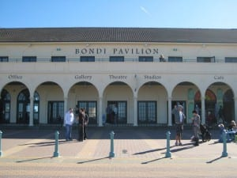

The Bondi Pavilion in 2010
The Bondi Wave Music Course provides young musicians with intensive training in all aspects of music and working in a band – singing, theory, percussion, business skills, etc. So over the autumn-winter months of 1992, spent 5 full days a week living, breathing and practically eating music with the other “Wavers” at the Pav. It was one of the most creatively satisfying few months of my life, being taught by a diverse range of outstanding and inspiring musos.
Is there anyone else who has can share some memories of being a “Bondi Waver?”
In the early days of the course, the uprising of anti-democracy protests in Thailand became headline news here in Sydney. Thai people were protesting in Bangkok against the government of General Suchinda Kraprayoon (a non-democratic regime), demanding Democracy. The military response resulted in over 50 confirmed deaths and hundreds of injuries. One of the hotels that I’d stayed in while I was in Bangkok became a makeshift hospital for the injured and nearby, the Democracy Monument on boulevard Thanon Ratchadamnoen Klang was where many of the protestors were killed, since this was where they gathered to give voice to their pleas for Democracy. This calamity became known as Black May in Thailand.
I was pretty upset by what was happening in Thailand and at the same time was getting into songwriting from doing the Wave. So I ended up writing a song called The Monument and we publicly performed it on stage in the Pav at in the end of course show.
In the last few days the news of protests in Bangkok again has and the injuries and deaths that have resulted from the military crackdown have jogged this Bondi Wave memory for me. Is it a coincidence that the Black May event of 17th – 20th May 1992, happened exactly 18 years ago?
Is this now Black May #2?
So I’ve decided to dig out the original recording of The Monument and put it up here in memory of all the Thai people who have died or who have been injured protesting for democracy in Bangkok, both in these past few days and during Black May 1992. Hope you enjoy it.